OVERVIEW
Previously, I was the UX designer of Shopline point of sale (POS) and lead the design of the user interface, prototyping, and cooperate with the iOS software engineer during development process. During this project, I did this case study for the POS usability improvment, and conducted the testing planning.
OBJECTIVE
Conduct usability improvement, testing planning
BACKGROUND
There are generally three types of merchants to Shopline who use our E-commerce website for their business:
- the worldwide commercial trade which provide product or service through a national or global platform, website for reaching widespread customer.
- the fast fasion business model focus on the high conversion rates which makes people get a chance to immediately buy from website than wait to visit the store.
- the tight budget merchants who need a smaller workforce to reduced risk and increase margin between profits and spending.
Point of sale marketing increases sales at the point the purchase is actually made. It’s a great system and motivates merchants to be more efficient, but the users have encountered a few problems while using this system. So our team decided to make improvements on this application.
Note: To comply with my non-disclosure agreement, I have omitted and de-identified the confidential information in this case. Some researches are my opinion and do not necessarily reflect the Shopline’s points of views.
DESIGN PROCESS
I decided to follow Stanford d.school and Lean UX Design Thinking process to make sure that my design decisions were supported by user research and feedback.
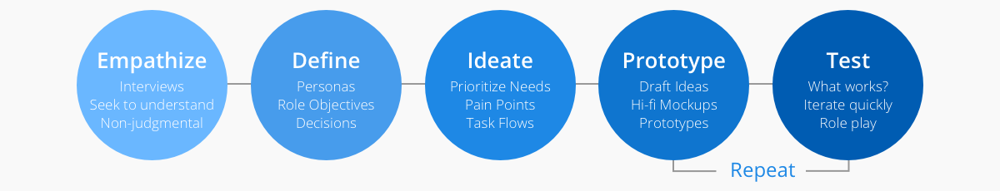PERSONA
I laid out the persona methodology, and created a provisional persona of a potential POS user based on online research and our merchants who I knew that used POS. This persona was created with an assumed scenario and not totally research-based but it was something to guide my design decisions and priorities on this project.
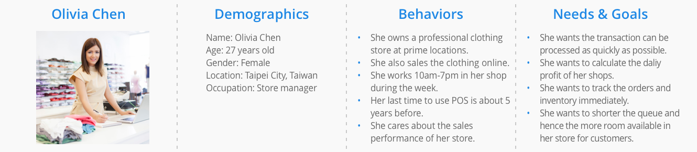JOB STORIES
I referred the Intercom on Jobs-to-be-done workflow to explore different contexts in which a user would use this system and to understand their motivation and desired outcome.
I wrote down the following job stories based on interviews with users of the POS application:
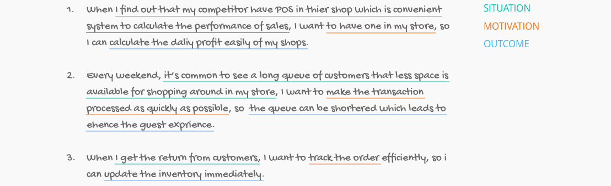USABILITY TESTING
Based on the job stories and my understanding of the core functions of the POS application, I developed a few scenarios with a series of tasks, such as:
I wrote down the following job stories based on interviews with users of the POS application:
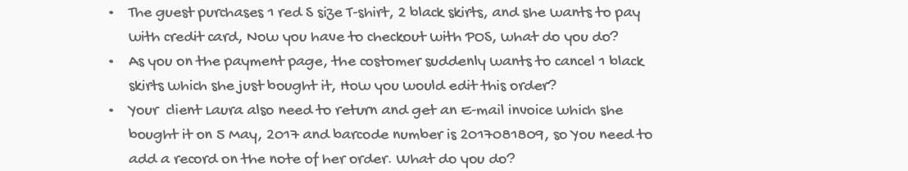With a good hypothesis, I focus on the subtleties of guerrilla usability test. Here’s the mission plan:
- Invite several friends and people randomly for the test.
- Explain to them you are working on a project and ask for 10–15 minutes of their time.
- Give them a few scenarios with tasks to complete on your application.
- Take notes while them using the POS.
- Thank them genuinely for their help.
With this plan, I listed some people and invited them to do the testing, verified that they at least use POS system once before starting the usability test. In the end, I tested the tasks with five individuals.
PRIORITISING PAIN POINTS
After the usability test, I reviewed the recordings of the results and jotted down each user’s pain point onto a Post-it. Then I used card sorting to group the pain points into similar categories on a whiteboard.
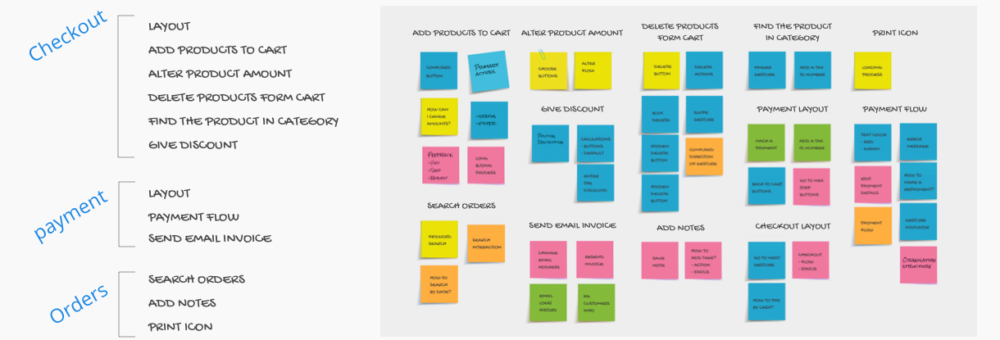Then I prioritised each pain point based on its importance to the user as well as its importance to POS. My assumptions of the importance to users were derived from conversations with the existing and potential users. The importance to POS were according to the analysis of our coustomer's website and marketing materials. Checkout, payment and orders were core functions of the product and cloud-based systems was a core feature that made POS stand out as a supply chain management application.
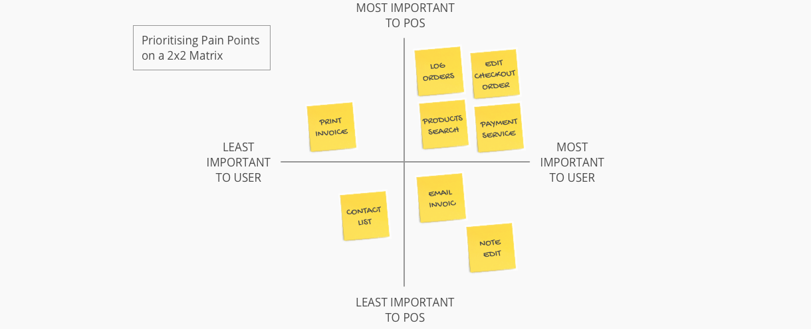DEFINING THE PROBLEM
I decided to tackle the four pain points that were both important to users and the POS application. My redefinition of the pain points are presented below.
Pain Point 1: Discoverability issue with entry points
There are some vague entry points on this checkout page: through a total price button for payment page and through the menu icon to navigation bar, but both entry points have discoverability issues.
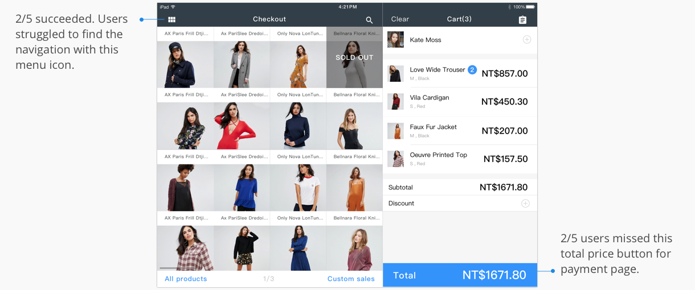Pain Point 2: Users had difficulty to find hiding action button
The POS system has a many hiding action buttons that users are hard to discover them at first time. For example, a user trying to change amount or delete the product in the shopping cart, she have to know swipe the product from left to right will appear the delete button. Click the selected item in shopping cart to change their quantity.
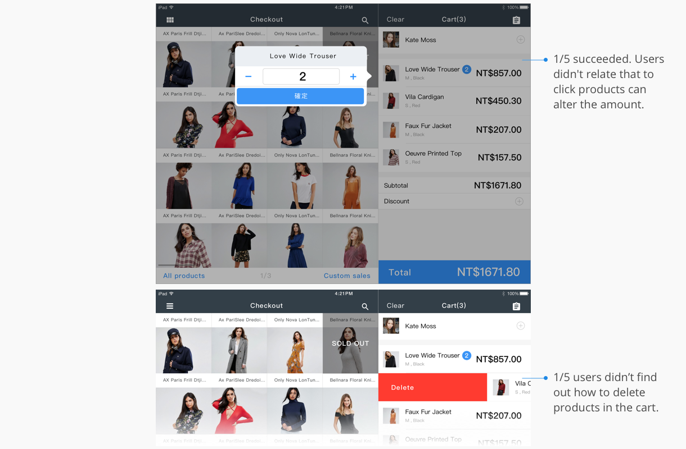Pain Point 3: Users suffered from long process for payment flow
There are two different entry points, Back to cart and Change order, but back to the same page. Users felt a little confused and maked some misunderstanding at this part. Furthermore, they clicked twice to confirm the payment at this page that repeated steps takes much time to finish the flow. Some of them even stopped for a few seconds at step1.
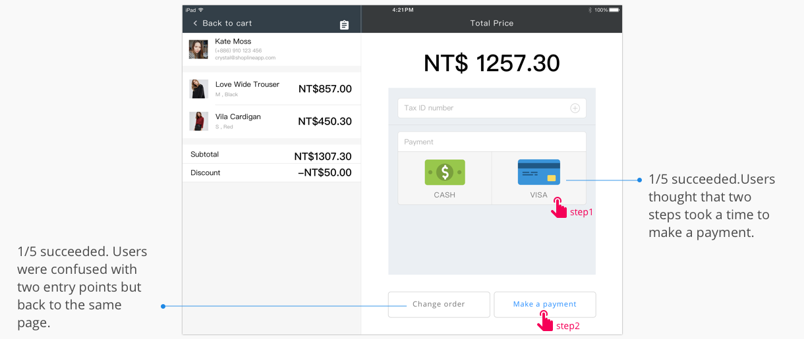User interviews revealed that keeping a short process is impotant for a user to motivate him/her to achieve the payment procedure. Currentlym a user will through more than 5 steps for creating an order, and interface is not in a clean, fast-paced look. This leads to either an exaggerated or inflated payment time which could be discouraging and frustrating to the user. Therefore, a successful UI flow for POS system is often designed with a few popups or other interruptions to ensure the operator isn't distracted and the transaction can be processed as quickly as possible.
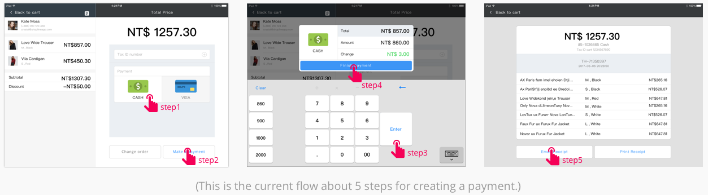Pain Point 4: Users had trouble finding how to search an order
Searching orders and inventory from online shop and also entity store by cloud-based integration is one of the standout features that making the POS app so crucial when it launched. Currently, to look for orders, a user has to click the search icon on the orders page, then puts in the key words to find with. In the usability test, 3 out of 5 users tried to look for an order by the date or barcode number. However, when they could not comprehend how to set a criteria range, they took more time to find the order accurately. This showed that a user who some guides to for narrowing the scope. And the current flow didn’t match their anticipation. Users would expect to be able to perform search criteria(especially the calendar) on this orders' page.
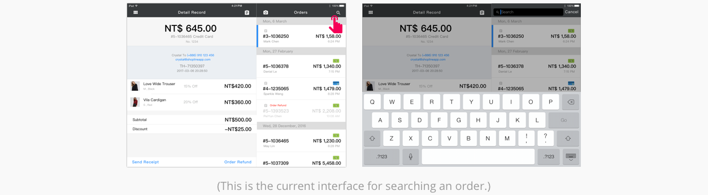TASK FLOW
I designed a user flow to show the process for a user who accurate complete the order on the POS app. The highlighted areas represent the first 3 pain points which I will tackle in my design solutions.
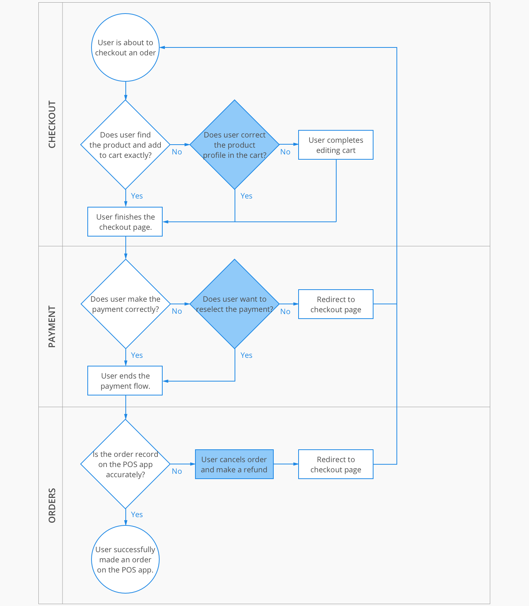IDEATING THE SOLUTION
Then it was time to start sketching. I came up with several potential solutions to each of the pain points and made some rough UI sketches. And I did the initial validation on the lo-fi UI sketches and used the feedback to refine my sketches and narrow down my solutions for the hi-fi mockups.
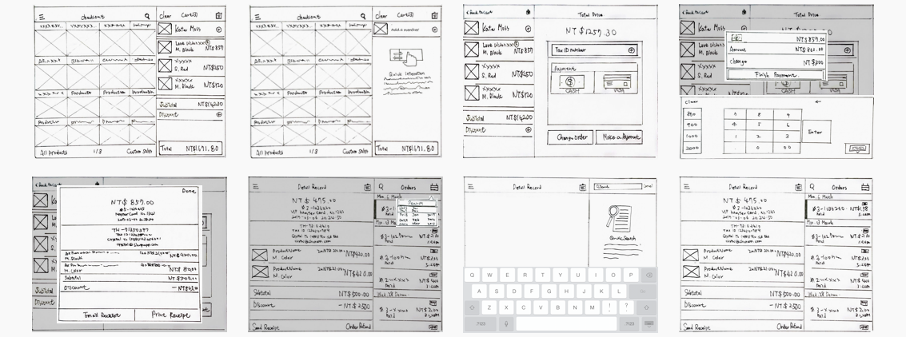PROTOTYPING AND VALIDATION
I used Sketch software to create hi-fi mockups of my proposals and used Invision to create a clickable prototype. I tested the prototype with 5 new individuals. Insights from the validation test led me to reiterate on one of the screens. Below are the hi-fi mockups of my final solutions including the results of the user testing before and after implementing my design solutions.
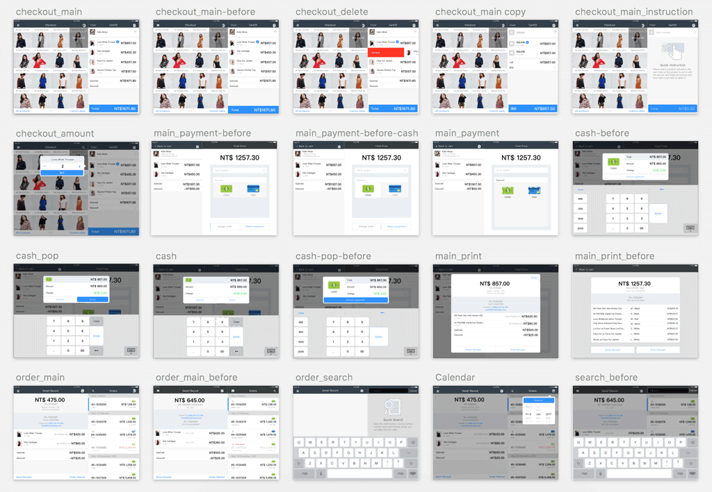Pain Point 1: Discoverability issue with entry points
Design solution: Replace the menu icon into hamburger menu which user is more familiar with. And compress the total price button, alter the shape from rectangle to round border corners.
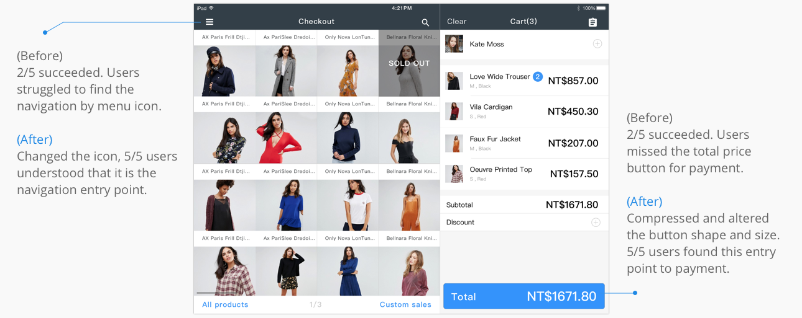Pain Point 2: Users had difficulty to find hiding action button
Design solution: Add a short instruction to introduce the gesture in the empty cart.
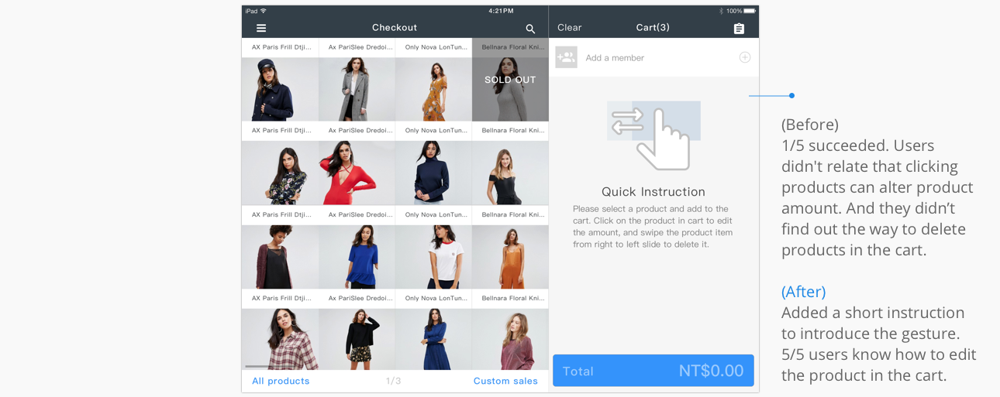Pain Point 3: Users suffered from long process for payment flow
Design solution: Reduce the action from twice click to one click for selecting the payment.
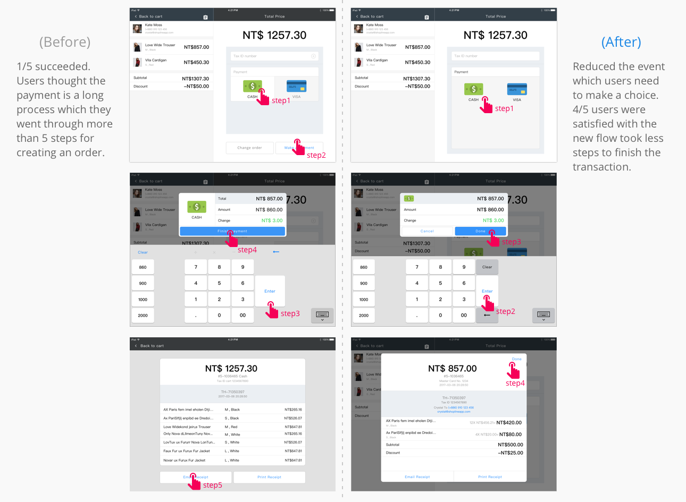Pain Point 4: Users had trouble finding how to search an order
Design solution: Put on a simple description to present the way for searching bar and add the calendar icon for search criteria.
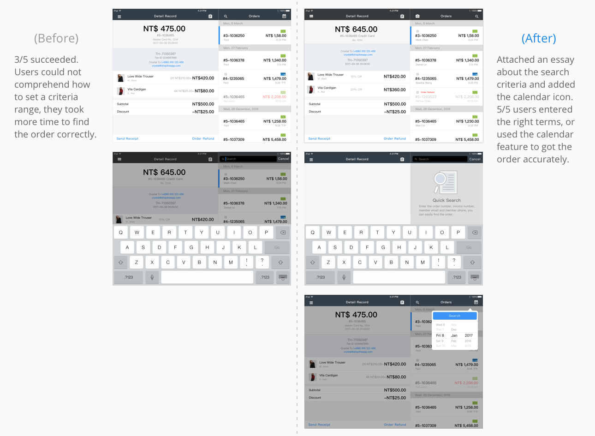Here’s an overview of the results of my design changes. Besides, you can also check out my prototype in the reference.
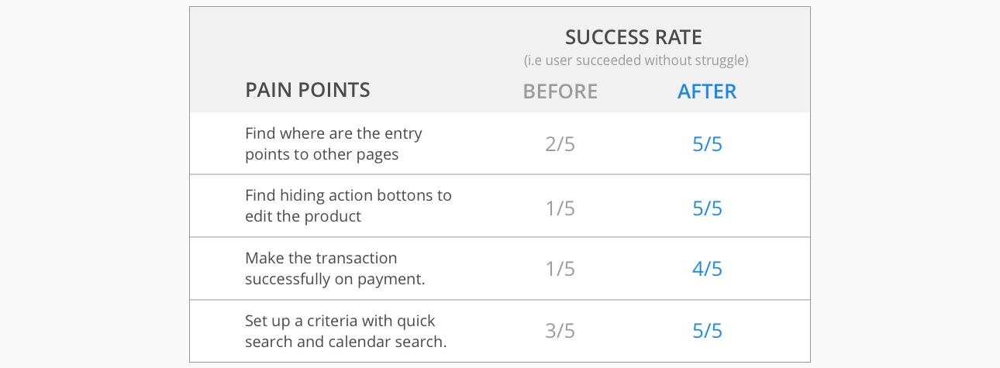REMARKS
POS is a remarkable product with a grand mission to assistant merchant manage store sales information. To achieve this, It faces one of the biggest challenges — integrate with E-commerce. It’s packed with a lot of powerful tools to do just that, such as processing monetary transactions, allocation and scheduling of facilities, keeping record and scheduling services rendered to customers, tracking of goods and processes (repair or manufacture), invoicing and tracking of debts and outstanding payments. Learning so lot of detail tasks is painful, so it’s even more important to make it being used as easy and friction-less as possible.